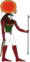
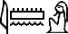
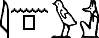
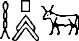
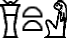
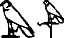
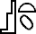
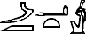
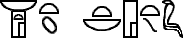
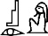

De: La Frikipedia, la enciclopedia extremadamente seria.
De: La Frikipedia, la enciclopedia extremadamente seria. De: La Frikipedia, la enciclopedia extremadamente seria.
| De la serie a quién rezarle: | |||
| Horus | |||
| |||
| ¿Quiénes lo adoran? | Antiguo Egipto y los que consumen la mona, mota, coca, y otras | ||
|---|---|---|---|
| Área de influencia | Todo aquello relacionado con los viajes "Elevados" | ||
| No puede faltarle | Un buen churro | ||
| ¿Bueno o malo? | El tío es muy buena onda. | ||
| Sus poderes | Medio inútil el tío, pero lo que mejor le sale es un aliento alcohólico que derrota al enemigo. | ||
| Dioses y héroes amigos | Isis y Osiris | ||
| Dioses y héroes enemigos | Seth | ||
| Es de esos dioses hijos de papá que no hace mucho en la vida, ni en la muerte, ni en la inmortalidad como es su caso. | |||
Horus es el nombre helénico (helénico = griego, gilipollas), que se le da al Dios del Antiguo Egipto Hor (pero como nadie le conoce por ese nombre nos referiremos a el como Horus). Es el Dios de mmm.. este… aaaa… oooo… bueno pues no tengo ni puta idea de que, porque era de esos Dioses que no tenían algo muy definido, tenían muchas labores y no hacían nada en concreto, vamos era medio vago, pero como hay que decir algo podemos decir que era Dios de lo elevado, porque el tío siempre se metía cuanta droga encontraba, por lo que siempre estaba elevado, también se le conoce como el Señor de los cielos.
En los dibujitos jeroglíficos de las pirámides se le representa como un Zopilote Águila o Humano con cabeza de Águila.
Bueno pues podemos decir que su nacimiento deriva literalmente de una chapucería de su madre Isis, quien durante el proceso para resucitar a su marido asesinado Osiris mediante la magia, le mete mano y de alguna manera logra concebir milagrosamente a su único hijo Horus, lo cual realmente es milagro, porque durante el proceso de resurrección se encontraron casi todas las partes de Osiris, menos el pene!!!! Lo cual nos hace preguntarnos varias cosas, como: ¿para que rayos lo resucito si ya no habría diversión? o ¿Cómo quedo embarazada sin la pieza fundamental para lograrlo? Pero bueno, no hay mucho que decir, recordemos que hablamos de dioses y con ellos no aplica la lógica. Por la gigantesca legaña que tiene el dibujito jeroglifico de Horus, se sospecha que nació en Almeria, donde Isis mantuvo un romance con un primate en Carboneras, inventándose luego toda la película de Osiris pa disimular.
Al nacer inmediatamente Isis esconde a su hijo de Seth, el asesino de su marido, y lo deja al cuidado de Thot quien es el Dios de la sabiduría, quien se encarga de educarlo. Cabe decir que los esfuerzos de Thot fueron en vano, el muy gilipollas se dedico a la fiesta y las drogas, he de allí que se le diera el nombre de “el elevado” porque el querubín siempre estaba hasta las manitas.
Ya rendido Thot de sus esfuerzos para educar a Horus, lo mando al mundo para que hiciera algo útil, primero se le mando para que negociara la paz con Seth, a quien termino matando, claro como iba hasta atrás, perdió toda la diplomacia, entendió mal lo que decía Seth, se le fue encima con un tenedor en mano y lo ataco, para aparentar las cosas cambiaron la versión oficial diciendo que Horus había vengado a su padre.
Después se le asigno el cuidado de su padre Osiris, quien era juez de los muertos, cabe decir que la cago, se presento “elevado” y no pudo hacer su labor, su amoroso padre tuvo a bien a patearle el culo y quitarlo de su presencia.
Posteriormente le dieron una plaza de Dios solar, para proteger a Ra (el sol) en su camino, algo hizo mal y así nacieron los eclipses (pero que si será imbécil el tío este). Bueno como vieron que era tan inútil lo mandaron a gobernar a los humanos, antes de su llegada solo había la paz, con su llegada nació la guerra (¡pero que leches!, que esta salado).
Finalmente ya cansado de sus fracasos se dedico a la mona y al chemo, es decir a la vida de las drogas, consolidándose así como “El Elevado” o “El Señor de los Cielos”.
Junto con su padre Osiris y su madre Isis, forman un equipo de bienhechores que dizque ayudan a los humanos, todo a cambio de pequeños sacrificios.
|  Dioses del Antiguo Egipto |
|---|
|      |
|     |
| |
Autor(es):